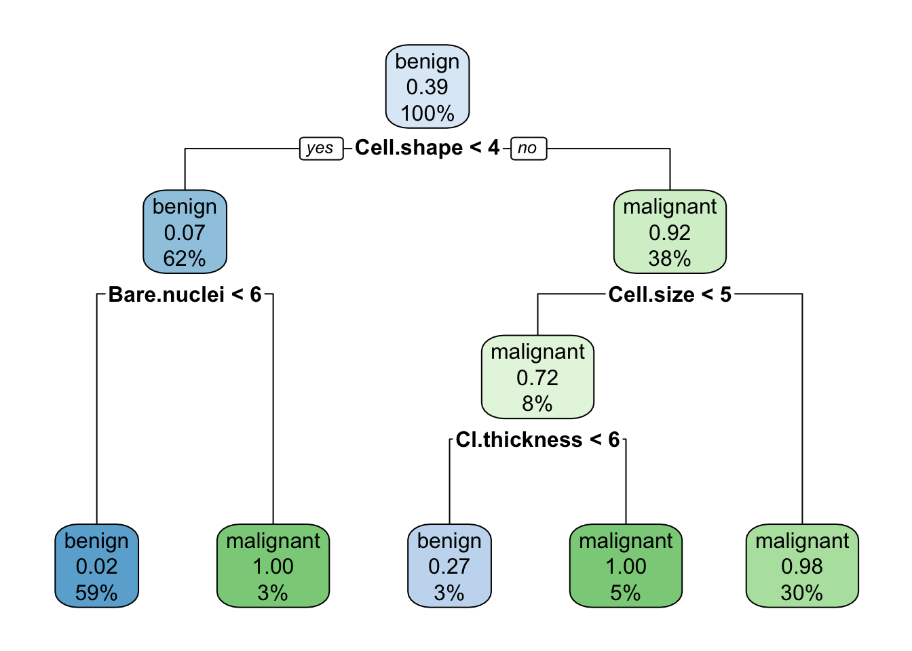

Chapter 13 ANN regression and classification
Aims
- to introduce regression and classification with ANN via examples
Learning outcomes
- to be able to use neuralnet() package for classification and regression
13.1 Exercise 1.1
13.1.1 Set-up
# Clean all variables and load libraries
rm(list=ls())
library(mlbench) # CancerBreast dataset
library(class) # knn
library(rpart) # decision tree
library(rpart.plot) # decision tree plots
library(neuralnet) # ann
library(NeuralNetTools) # ann tools
library(ggplot2) # plotting
library(ggiraphExtra)13.1.2 Load and process the data
# Data input
data("BreastCancer")
head(BreastCancer) # preview data
## Id Cl.thickness Cell.size Cell.shape Marg.adhesion Epith.c.size
## 1 1000025 5 1 1 1 2
## 2 1002945 5 4 4 5 7
## 3 1015425 3 1 1 1 2
## 4 1016277 6 8 8 1 3
## 5 1017023 4 1 1 3 2
## 6 1017122 8 10 10 8 7
## Bare.nuclei Bl.cromatin Normal.nucleoli Mitoses Class
## 1 1 3 1 1 benign
## 2 10 3 2 1 benign
## 3 2 3 1 1 benign
## 4 4 3 7 1 benign
## 5 1 3 1 1 benign
## 6 10 9 7 1 malignant
str(BreastCancer) # show data types
## 'data.frame': 699 obs. of 11 variables:
## $ Id : chr "1000025" "1002945" "1015425" "1016277" ...
## $ Cl.thickness : Ord.factor w/ 10 levels "1"<"2"<"3"<"4"<..: 5 5 3 6 4 8 1 2 2 4 ...
## $ Cell.size : Ord.factor w/ 10 levels "1"<"2"<"3"<"4"<..: 1 4 1 8 1 10 1 1 1 2 ...
## $ Cell.shape : Ord.factor w/ 10 levels "1"<"2"<"3"<"4"<..: 1 4 1 8 1 10 1 2 1 1 ...
## $ Marg.adhesion : Ord.factor w/ 10 levels "1"<"2"<"3"<"4"<..: 1 5 1 1 3 8 1 1 1 1 ...
## $ Epith.c.size : Ord.factor w/ 10 levels "1"<"2"<"3"<"4"<..: 2 7 2 3 2 7 2 2 2 2 ...
## $ Bare.nuclei : Factor w/ 10 levels "1","2","3","4",..: 1 10 2 4 1 10 10 1 1 1 ...
## $ Bl.cromatin : Factor w/ 10 levels "1","2","3","4",..: 3 3 3 3 3 9 3 3 1 2 ...
## $ Normal.nucleoli: Factor w/ 10 levels "1","2","3","4",..: 1 2 1 7 1 7 1 1 1 1 ...
## $ Mitoses : Factor w/ 9 levels "1","2","3","4",..: 1 1 1 1 1 1 1 1 5 1 ...
## $ Class : Factor w/ 2 levels "benign","malignant": 1 1 1 1 1 2 1 1 1 1 ...
# data summary
summary(BreastCancer)
## Id Cl.thickness Cell.size Cell.shape Marg.adhesion
## Length:699 1 :145 1 :384 1 :353 1 :407
## Class :character 5 :130 10 : 67 2 : 59 2 : 58
## Mode :character 3 :108 3 : 52 10 : 58 3 : 58
## 4 : 80 2 : 45 3 : 56 10 : 55
## 10 : 69 4 : 40 4 : 44 4 : 33
## 2 : 50 5 : 30 5 : 34 8 : 25
## (Other):117 (Other): 81 (Other): 95 (Other): 63
## Epith.c.size Bare.nuclei Bl.cromatin Normal.nucleoli Mitoses
## 2 :386 1 :402 2 :166 1 :443 1 :579
## 3 : 72 10 :132 3 :165 10 : 61 2 : 35
## 4 : 48 2 : 30 1 :152 3 : 44 3 : 33
## 1 : 47 5 : 30 7 : 73 2 : 36 10 : 14
## 6 : 41 3 : 28 4 : 40 8 : 24 4 : 12
## 5 : 39 (Other): 61 5 : 34 6 : 22 7 : 9
## (Other): 66 NA's : 16 (Other): 69 (Other): 69 (Other): 17
## Class
## benign :458
## malignant:241
##
##
##
##
##
# convert variables to numerical values
data.breast <- BreastCancer
data.breast <- data.frame(Class = BreastCancer$Class,
Cell.size = as.numeric(BreastCancer$Cell.size),
Cell.shape = as.numeric(BreastCancer$Cell.shape),
Cl.thickness = as.numeric(BreastCancer$Cl.thickness),
Marg.adhesion = as.numeric(BreastCancer$Marg.adhesion),
Epith.c.size = as.numeric(BreastCancer$Epith.c.size),
Bare.nuclei = as.numeric(BreastCancer$Bare.nuclei),
Bl.cromatin = as.numeric(BreastCancer$Bare.nuclei),
Normal.nucleoli = as.numeric(BreastCancer$Normal.nucleoli),
Mitoses = as.numeric(BreastCancer$Mitoses)
)
str(data.breast)
## 'data.frame': 699 obs. of 10 variables:
## $ Class : Factor w/ 2 levels "benign","malignant": 1 1 1 1 1 2 1 1 1 1 ...
## $ Cell.size : num 1 4 1 8 1 10 1 1 1 2 ...
## $ Cell.shape : num 1 4 1 8 1 10 1 2 1 1 ...
## $ Cl.thickness : num 5 5 3 6 4 8 1 2 2 4 ...
## $ Marg.adhesion : num 1 5 1 1 3 8 1 1 1 1 ...
## $ Epith.c.size : num 2 7 2 3 2 7 2 2 2 2 ...
## $ Bare.nuclei : num 1 10 2 4 1 10 10 1 1 1 ...
## $ Bl.cromatin : num 1 10 2 4 1 10 10 1 1 1 ...
## $ Normal.nucleoli: num 1 2 1 7 1 7 1 1 1 1 ...
## $ Mitoses : num 1 1 1 1 1 1 1 1 5 1 ...
# Remove missing data
data.breast <- na.omit(data.breast)13.1.3 Data split
# Split into train, validation, test
# split data into train 50%, validation 25% and test dataset 25%
set.seed(1)
n <- nrow(data.breast) # no. of observations
idx.train <- sample(c(1:n), round(n/2))
idx.valid <- sample(c(1:n)[-idx.train], round(n/4))
idx.test <- setdiff(c(1:n), c(idx.train, idx.valid))
data.train <- data.breast[idx.train,]
data.valid <- data.breast[idx.valid,]
data.test <- data.breast[idx.test,]
dim(data.train)
## [1] 342 10
dim(data.valid)
## [1] 171 10
dim(data.test)
## [1] 170 1013.1.4 Default knn, decision tree and logistic regression classification
# KNN (k=3)
knn.pred <- knn(train = data.train[, -1], data.test[, -1], data.train[,1], k=3)
knn.cr <- sum((knn.pred==data.test[,1]))/length(knn.pred) # classification rate
print(knn.cr)
## [1] 0.9588235
# Decision tree
cart.1 <- rpart(data.train$Class ~ Cl.thickness + Cell.size + Cell.shape + Marg.adhesion + Epith.c.size + Bare.nuclei + Bl.cromatin + Normal.nucleoli + Mitoses, data=data.train)
rpart.plot(cart.1)
cart.pred <- predict(cart.1, newdata = data.test, type="class")
cart.cr <- sum((cart.pred==data.test[,1]))/length(cart.pred)
print(cart.cr)
## [1] 0.9352941
# Logisitc regression
logreg <- glm(data.train$Class ~ Cl.thickness + Cell.size + Cell.shape + Marg.adhesion + Epith.c.size + Bare.nuclei + Bl.cromatin + Normal.nucleoli + Mitoses, data=data.train, family = binomial(link="logit"))
## Warning: glm.fit: fitted probabilities numerically 0 or 1 occurred
print(summary(logreg))
##
## Call:
## glm(formula = data.train$Class ~ Cl.thickness + Cell.size + Cell.shape +
## Marg.adhesion + Epith.c.size + Bare.nuclei + Bl.cromatin +
## Normal.nucleoli + Mitoses, family = binomial(link = "logit"),
## data = data.train)
##
## Deviance Residuals:
## Min 1Q Median 3Q Max
## -2.78015 -0.09873 -0.04989 0.00842 2.29108
##
## Coefficients: (1 not defined because of singularities)
## Estimate Std. Error z value Pr(>|z|)
## (Intercept) -10.8815 2.1472 -5.068 4.02e-07 ***
## Cl.thickness 0.4050 0.2242 1.807 0.070827 .
## Cell.size 0.1039 0.2724 0.381 0.702933
## Cell.shape 0.6366 0.3678 1.731 0.083481 .
## Marg.adhesion 0.3343 0.1951 1.714 0.086534 .
## Epith.c.size -0.4608 0.2947 -1.564 0.117860
## Bare.nuclei 0.5100 0.1525 3.343 0.000828 ***
## Bl.cromatin NA NA NA NA
## Normal.nucleoli 0.5765 0.1944 2.966 0.003015 **
## Mitoses 2.3031 1.2862 1.791 0.073361 .
## ---
## Signif. codes: 0 '***' 0.001 '**' 0.01 '*' 0.05 '.' 0.1 ' ' 1
##
## (Dispersion parameter for binomial family taken to be 1)
##
## Null deviance: 457.974 on 341 degrees of freedom
## Residual deviance: 40.942 on 333 degrees of freedom
## AIC: 58.942
##
## Number of Fisher Scoring iterations: 9
logreg.prob <- predict(logreg, newdata=data.test, type="response")
## Warning in predict.lm(object, newdata, se.fit, scale = 1, type = if (type == :
## prediction from a rank-deficient fit may be misleading
logreg.pred <- rep("malignant", nrow(data.test))
logreg.pred[logreg.prob <= 0.5] <- "benign"
logreg.cr <- sum((logreg.pred==data.test[,1]))/length(logreg.pred)
print(logreg.cr)
## [1] 0.9411765
print(c(knn.cr, cart.cr, logreg.cr))
## [1] 0.9588235 0.9352941 0.941176513.1.5 ANN classification: fitting model
# fit ANN classification model (default parameters and logistic activation function)
# notice linear.output set to FALSE
ann.c1 <- neuralnet(Class ~ Cl.thickness + Cell.size + Cell.shape +
Marg.adhesion + Epith.c.size + Bare.nuclei +
Bl.cromatin + Normal.nucleoli + Mitoses,
data=data.train,
linear.output = FALSE,
act.fct = "logistic")
plotnet(ann.c1, cex_val = 0.6)Figure 13.1: ANN model representation. The black lines show the connections between each layer and the weights on each connection; B nodes represent bias terms added in each step (bias nodes), and the hidden nodes are the ones between the input and output, here only one node
13.1.6 ANN classification: comparing to logistic regression
# we run prediction using compute function()
ann.c1_predictions <- neuralnet::compute(ann.c1,
data.test)
ann.c1_predictions <- ann.c1_predictions$net.result
# The prediction result shows the probability of each class
# with first column corresponding to benign and second to malignant
# we know as by typing str(data.breast) we can see that our Class is ordered benign and malignant
head(ann.c1_predictions)
## [,1] [,2]
## 13 0.003303861 9.965274e-01
## 17 1.000000000 1.278634e-10
## 20 1.000000000 3.511953e-10
## 23 1.000000000 9.554493e-11
## 27 0.999999999 4.639298e-10
## 31 1.000000000 2.895116e-10
# So we need the extract the class with the highest prediction values as the predicted result
# e.g by using ifelse
ann.c1_pred <- max.col(ann.c1_predictions) # find out which column has the maximum value
ann.c1_pred <- ifelse(ann.c1_pred==1, "benign", "malignant") # if the first column was max, set it to beign, malignant otherwise
ann1.cr <- sum((ann.c1_pred==data.test[,1]))/length(ann.c1_pred)
print(ann1.cr)
## [1] 0.9470588
# Compare with our previous models
print(c(knn.cr, cart.cr, logreg.cr, ann1.cr))
## [1] 0.9588235 0.9352941 0.9411765 0.9470588
# Note: we see we are not doing quite similar to logistic regression
# It is not surprising as we only have one hidden layer with only one node with logistic activation function
# and the linear regression can be viewed as a simple special case of neural network with no hidden layer13.1.8 ANN classification: changing activation function
# We can change activation function via act.fct parameter and include custom functions
# e.g. softplus <- function(x) log(1 + exp(x))
# or relu <- function(x) sapply(x, function(z) max(0,z))
# here we switch to "tanh" from a default "logistic"
set.seed(101)
ann.c3 <- neuralnet(Class ~ Cl.thickness + Cell.size + Cell.shape +
Marg.adhesion + Epith.c.size + Bare.nuclei +
Bl.cromatin + Normal.nucleoli + Mitoses,
data=data.train,
hidden = c(2,5),
linear.output = FALSE,
act.fct = "tanh")
ann.c3_predictions <- neuralnet::compute(ann.c3, data.test)$net.result
ann.c3_pred <- max.col(ann.c3_predictions) # find out which column has the maximum value
ann.c3_pred <- ifelse(ann.c3_pred==1, "benign", "malignant") # if the first column was max, set it to benign, malignant otherwise
ann3.cr <- sum((ann.c3_pred==data.test[,1]))/length(ann.c3_pred)
# Compare with our previous models
print(c(knn.cr, cart.cr, logreg.cr, ann1.cr, ann2.cr, ann3.cr))
## [1] 0.9588235 0.9352941 0.9411765 0.9470588 0.9529412 0.700000013.1.9 ANN regression
set.seed(1)
# read in data on Pima Indians Diabeses Database
data(PimaIndiansDiabetes)
head(PimaIndiansDiabetes)
## pregnant glucose pressure triceps insulin mass pedigree age diabetes
## 1 6 148 72 35 0 33.6 0.627 50 pos
## 2 1 85 66 29 0 26.6 0.351 31 neg
## 3 8 183 64 0 0 23.3 0.672 32 pos
## 4 1 89 66 23 94 28.1 0.167 21 neg
## 5 0 137 40 35 168 43.1 2.288 33 pos
## 6 5 116 74 0 0 25.6 0.201 30 neg
summary(PimaIndiansDiabetes)
## pregnant glucose pressure triceps
## Min. : 0.000 Min. : 0.0 Min. : 0.00 Min. : 0.00
## 1st Qu.: 1.000 1st Qu.: 99.0 1st Qu.: 62.00 1st Qu.: 0.00
## Median : 3.000 Median :117.0 Median : 72.00 Median :23.00
## Mean : 3.845 Mean :120.9 Mean : 69.11 Mean :20.54
## 3rd Qu.: 6.000 3rd Qu.:140.2 3rd Qu.: 80.00 3rd Qu.:32.00
## Max. :17.000 Max. :199.0 Max. :122.00 Max. :99.00
## insulin mass pedigree age diabetes
## Min. : 0.0 Min. : 0.00 Min. :0.0780 Min. :21.00 neg:500
## 1st Qu.: 0.0 1st Qu.:27.30 1st Qu.:0.2437 1st Qu.:24.00 pos:268
## Median : 30.5 Median :32.00 Median :0.3725 Median :29.00
## Mean : 79.8 Mean :31.99 Mean :0.4719 Mean :33.24
## 3rd Qu.:127.2 3rd Qu.:36.60 3rd Qu.:0.6262 3rd Qu.:41.00
## Max. :846.0 Max. :67.10 Max. :2.4200 Max. :81.00
str(PimaIndiansDiabetes)
## 'data.frame': 768 obs. of 9 variables:
## $ pregnant: num 6 1 8 1 0 5 3 10 2 8 ...
## $ glucose : num 148 85 183 89 137 116 78 115 197 125 ...
## $ pressure: num 72 66 64 66 40 74 50 0 70 96 ...
## $ triceps : num 35 29 0 23 35 0 32 0 45 0 ...
## $ insulin : num 0 0 0 94 168 0 88 0 543 0 ...
## $ mass : num 33.6 26.6 23.3 28.1 43.1 25.6 31 35.3 30.5 0 ...
## $ pedigree: num 0.627 0.351 0.672 0.167 2.288 ...
## $ age : num 50 31 32 21 33 30 26 29 53 54 ...
## $ diabetes: Factor w/ 2 levels "neg","pos": 2 1 2 1 2 1 2 1 2 2 ...
# pregnant: Number of times pregnant
# glucose: Plasma glucose concentration (glucose tolerance test)
# pressure: Diastolic blood pressure (mm Hg)
# triceps: Triceps skin fold thickness (mm)
# insulin: 2-Hour serum insulin (mu U/ml)
# mass: Body mass index (weight in kg/(height in m)\^2) Diabetes pedigree function
# age: Age (years)
# diabetes: Class variable (test for diabetes)
# remove missing values i.e. some mass measurements are 0
idx.0 <- which(PimaIndiansDiabetes$mass == 0)
data.pima <- PimaIndiansDiabetes[-idx.0,]
# re-scale data
data.pima$diabetes <- as.numeric(data.pima$diabetes)-1
maxs <- apply(data.pima, 2, max)
mins <- apply(data.pima, 2, min)
data.pima <- as.data.frame(scale(data.pima, center=mins, scale=maxs - mins))
head(data.pima)
## pregnant glucose pressure triceps insulin mass pedigree
## 1 0.35294118 0.7437186 0.5901639 0.3535354 0.0000000 0.3149284 0.23441503
## 2 0.05882353 0.4271357 0.5409836 0.2929293 0.0000000 0.1717791 0.11656704
## 3 0.47058824 0.9195980 0.5245902 0.0000000 0.0000000 0.1042945 0.25362938
## 4 0.05882353 0.4472362 0.5409836 0.2323232 0.1111111 0.2024540 0.03800171
## 5 0.00000000 0.6884422 0.3278689 0.3535354 0.1985816 0.5092025 0.94363792
## 6 0.29411765 0.5829146 0.6065574 0.0000000 0.0000000 0.1513292 0.05251921
## age diabetes
## 1 0.4833333 1
## 2 0.1666667 0
## 3 0.1833333 1
## 4 0.0000000 0
## 5 0.2000000 1
## 6 0.1500000 0
# split into train and test
n <- nrow(data.pima)
idx.train <- sample(c(1:n), round(n/2))
idx.test <- setdiff(c(1:n), idx.train)
data.train <- data.pima[idx.train, ]
data.test <- data.pima[idx.test,]
# fit multiple regression model to predict mass (BMI) based on other measurements
reg <- lm(mass ~ age + triceps + factor(diabetes) + insulin + glucose + pregnant + pressure, data = data.train)
summary(reg)
##
## Call:
## lm(formula = mass ~ age + triceps + factor(diabetes) + insulin +
## glucose + pregnant + pressure, data = data.train)
##
## Residuals:
## Min 1Q Median 3Q Max
## -0.27091 -0.09095 -0.01383 0.07434 0.49669
##
## Coefficients:
## Estimate Std. Error t value Pr(>|t|)
## (Intercept) 0.10099 0.03375 2.992 0.00296 **
## age -0.02083 0.04168 -0.500 0.61746
## triceps 0.30591 0.04332 7.062 8.20e-12 ***
## factor(diabetes)1 0.09178 0.01520 6.037 3.82e-09 ***
## insulin -0.09777 0.06031 -1.621 0.10585
## glucose 0.02333 0.04736 0.493 0.62264
## pregnant -0.06298 0.03806 -1.655 0.09883 .
## pressure 0.18860 0.04577 4.120 4.67e-05 ***
## ---
## Signif. codes: 0 '***' 0.001 '**' 0.01 '*' 0.05 '.' 0.1 ' ' 1
##
## Residual standard error: 0.1219 on 370 degrees of freedom
## Multiple R-squared: 0.2906, Adjusted R-squared: 0.2772
## F-statistic: 21.65 on 7 and 370 DF, p-value: < 2.2e-16
# calculate sum of squared errors (SSE)
yhat.reg1 <- predict(reg, newdata = data.test)
reg.sse <- data.frame(sse.train = sum((reg$fitted.values - data.train$mass)^2)/2,
sse.test = sum((yhat.reg1 - data.test$mass)^2)/2)
# fit ANN regression model
# notice linear.output set to TRUE this time
ann.r1 <- neuralnet(mass ~ age + triceps + insulin + glucose + pregnant + pressure,
data = data.train,
hidden = c(5),
linear.output = TRUE)
plotnet(ann.r1)Figure 13.2: ANN network visualisation for regression
# SSE and RMSE errors
yhat.annr1 <- neuralnet::compute(ann.r1, data.test)$net.result
annr1.sse <- data.frame(sse.train = sum((ann.r1$net.result[[1]] - data.train$mass)^2)/2,
sse.test = sum((yhat.annr1 - data.train$mass)^2)/2)
## Warning in yhat.annr1 - data.train$mass: longer object length is not a multiple
## of shorter object length
# compare SSE errors for train and test between multiple regression and ANN
print(reg.sse)
## sse.train sse.test
## 1 2.751006 3.04521
print(annr1.sse)
## sse.train sse.test
## 1 2.109606 137.7486
# plot predicted values vs. mass values for the train and test data separately
par(mfrow=c(1,2))
plot(data.train$mass, reg$fitted.values, pch=19, col="lightblue", xlab="mass (true value)", ylab="Prediction")
points(data.train$mass, ann.r1$net.result[[1]], pch=19, col="coral2")
lines(x=c(-100:100), y=c(-100:100))
plot(data.test$mass, yhat.reg1, pch=19, col="lightblue", xlab="mass (true value)", ylab="Prediction")
points(data.test$mass, yhat.annr1, pch=19, col="coral2")
lines(x=c(-100:100), y=c(-100:100))Figure 13.3: Comparison of predicted values vs. known values with linear regression (blue) and ANN (red) on the training data set (left) and on the test data set (right)
13.1.10 ANN rep value
Have we said at the lecture that the weights are randomly assigned at the start? How do we know that we have a best network? Above we have looked at one network and used a random seed to ensure reproducibility of the results. We could have been just unlucky with our comparisons to logigits or linear regression. In practice, one would fit many networks and choose a best one
# Here we will set rep to 5, it is getting computationally heavy
set.seed(1)
ann.r2 <- neuralnet(mass ~ age + triceps + insulin + glucose + pregnant + pressure,
data = data.train,
hidden = c(5),
linear.output = TRUE,
rep = 5)
#plot(ann.r2, rep = "best")13.1.11 ANN relative importance of variables
- Weights that connect nodes in a neural network cannot be interpreted as the parameters coefficients of a standard linear regression model
- They can be thought of as analogous to them and can be used to describe relationships between variables
- i.e. weights dictate the relative influence of information that is processed in the network such that input variables that are not relevant in terms of their correlation with the response are suppressed by the weights
- A difference between neural network and a regression model is that the number of weights is excessive in the former case
- This makes neural network powerful and flexible, the price for that is easiness of integration of the model, it is not so straightforward anymore
- One method to identify the relative importance of the covariates is by Garson (1991) and is based by deconstructing the model weights (implented in NerualNetTools)
garson(ann.r1)Figure 11.2: Output of the variable important call for one of the ANN regression models
Feel free to experiment with different options of the neuralnet() and different datasets that we have used so far. Do note however, that neurlanet() package is great fpr getting some ideas about running ANN, the heavy duty work is done on GPUs typically via Keras, often in Python, although now Tensforlow is available for R as well.